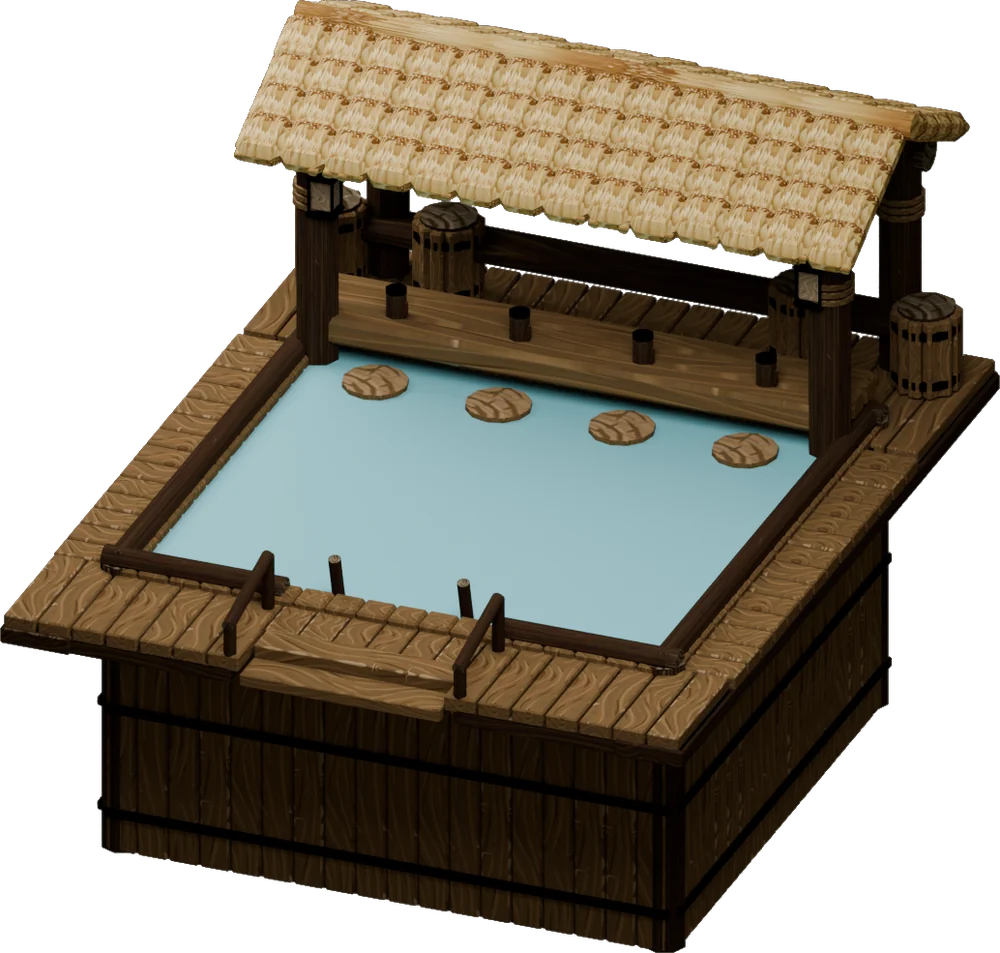
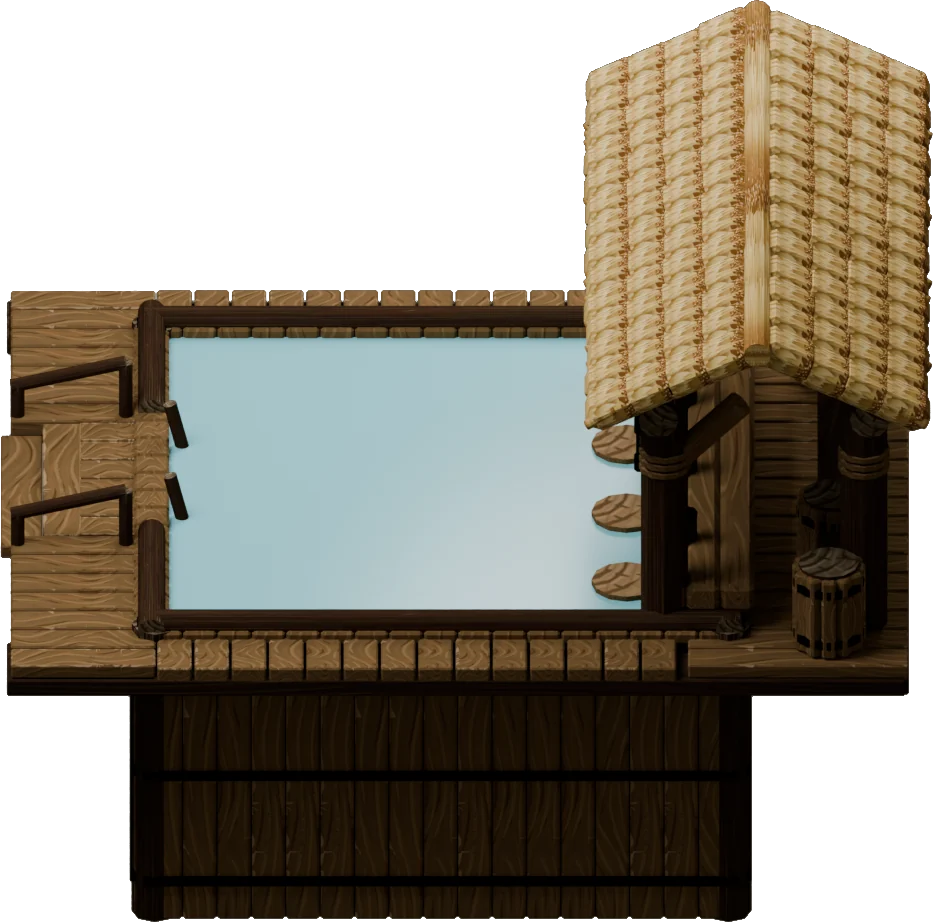
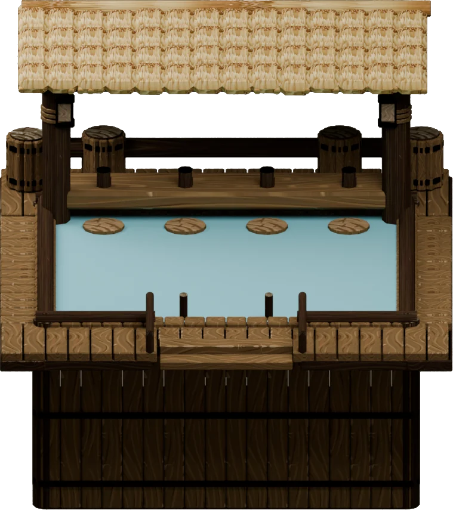
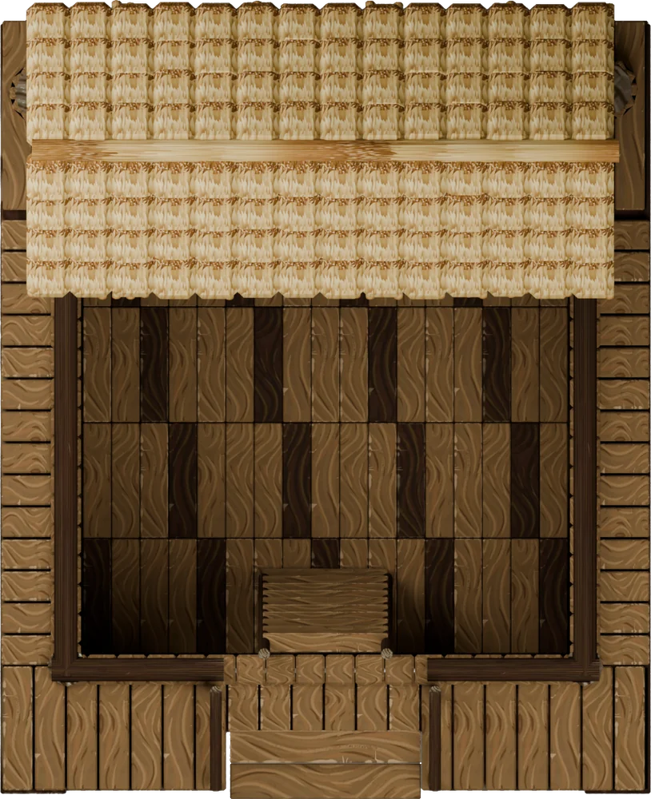

The Tipsy Tail
A swim-up pool bar for your beavers.
A timber-and-thatch pool bar sunk into the ground, where eight beavers unwind at once. It relieves its own Social Life need, worth up to +2 well-being, and Wet fur like the Lido. Haulers keep it filled with water.
It asks for: a level 5 × 6 site on solid ground, a staffed Hauling Post with water, and 500 science. No other mods.
Pre-release · For Timberborn 1.1.2.4 · Folktails and Iron Teeth · Release notes

On the house
Four coasters from the bar, one fact each. Hover or tap one to turn it over.
-
8beavers at once
Four seats, four lanes
Four bar seats and four swimming lanes. Both factions get it, under Well-being.
-
+2well-being
A need of its own
The Tipsy Tail need, in Social Life. An extra source of well-being, not a replacement for the Lido.
-
0.5Wet fur an hour
Dries off like the Lido
Every visitor, seated or swimming, relieves Wet fur at the same rate as the Lido and Swimming Pool.
-
12water a day
Kept full by haulers
A 60-water reserve, draining 0.5 an hour while it runs. No workers, no power.
On the bar
Model renders from Blender. In game the basin is buried and the water is the game's own lake water.



In-game screenshots are welcome: a view of your own pool bar in a colony would sit here.
- Reserve
- 60 water, brought from your stores by haulers from a staffed Hauling Post
- Drain
- 0.5 an hour (12 a day) while it's open, even with nobody in it
- Runs dry
- both needs stop and the water vanishes until haulers refill it
- Map water
- untouched; the pool adds no water to the map
What is tested, and what isn't
Tested
- Earlier builds were played in game, including multiplayer with every player on the same version.
- The recreation, Wet fur and water-supply wiring was checked against the game's own code.
- Offline checks against the game's own files cover the model, blueprints, materials, geometry, Wet fur, the terrain cutout and the water data.
Not confirmed in game yet
- The pool's lake-water look.
- Swimmers sitting at the water surface. Worth a glance in your own colony.
- An optional
water.cfgin a renamed mod folder (proven outside the game). - Pools placed with the very first builds, on thin ground or platforms, may need rebuilding.
- Game versions other than 1.1.2.4.
Please report anything odd with a screenshot and your Player.log.
Install in four steps
- Close Timberborn.
- Download
TipsyTail-v…-mod.zipunder Assets on the release page. Not "Source code", and not the water-presets or public-source zips. - Extract the
TipsyTailfolder intoDocuments\Timberborn\Mods, somanifest.jsonsits directly inMods\TipsyTail. Keep only one version installed. - Enable The Tipsy Tail in the mod manager and restart when asked.
Updating
Close the game and replace the old TipsyTail folder with the new one. Saves load unchanged.
Co-op
Every player installs the same version of the mod and runs the same game version.
Before your first dip
Does the pool use river or lake water?
No. Haulers bring Water from your stores, and the map's water is untouched. The pool's surface stays at the same height as the reserve drains.
Can I put it on a platform or dig a pit first?
No. It needs two solid soil layers under its 5 × 6 footprint, and the basin appears when construction finishes. Platforms and empty pre-dug pits don't qualify.
Does it replace the Lido or the Swimming Pool?
No, it adds to them. Every visitor relieves Wet fur at the same 0.5 an hour, plus the Tipsy Tail need in Social Life, worth up to +2 well-being.
Why does the pool water look like the lake?
It's drawn with the game's own lake-water material; the map's water isn't changed. If it looks wrong, the water-presets zip on the release page can switch to an older look or log the pool's values. Copy a preset into the mod folder as water.cfg, and delete it to go back.
How do I report a problem?
Open a GitHub issue and fill in the form. Attach a screenshot and any error from %USERPROFILE%\AppData\LocalLow\Mechanistry\Timberborn\Player.log. Remove personal information first.